Guida aggiornata al 18 novembre 2026
Chiedilo a Pinuzza risponde alle domande sulla burocrazia del Comune di Palermo e per ogni risposta mostra l'ufficio che se ne occupa, con sede, telefono, email e PEC. Non è un modello linguistico e non chiama nessun servizio a pagamento: le risposte vengono da un archivio preparato di domande, schede servizio e uffici del Comune.
1. Fare una domanda
Apri la home e scrivi nel campo in alto, con parole tue: «come cambio residenza», «quanto costa la mensa», «come faccio per la carta d'identità». Non serve sapere il nome dell'ufficio né il termine tecnico: se scrivi «rifiuti» Pinuzza capisce anche «spazzatura» e «immondizia».
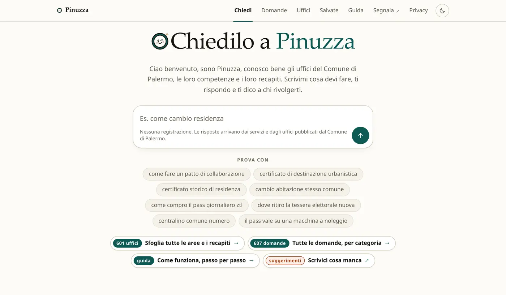
- Scrivi la domanda nel campo e premi la freccia in alto a destra (o il tasto Invio).
- Se non sai da dove partire, tocca una delle domande di prova sotto il campo: cambiano a ogni apertura, così non vedi sempre le stesse.
- Puoi chiedere due cose insieme: «come cambio residenza e come iscrivo mio figlio alla mensa». La risposta principale resta la prima, la seconda arriva in un riquadro «Nella domanda c'è anche questo».
I refusi non fermano la ricerca: «residensa» o «famglia» vengono corretti e la domanda si cerca come le altre. Se invece la domanda è davvero fuori tema, Pinuzza lo dice apertamente (lo vedi al punto 4).
Dopo la prima risposta l'indirizzo della pagina cambia in ?q=…: puoi copiarlo,
aggiungerlo ai preferiti o mandarlo a qualcuno, e si riaprirà con la stessa risposta.
2. Leggere la risposta
Ogni risposta è una scheda divisa sempre allo stesso modo: prima il tema e il nome del servizio, poi la sintesi, quindi i passi e i documenti. È la struttura delle schede servizio pubblicate dal Comune, non un testo generato al momento.
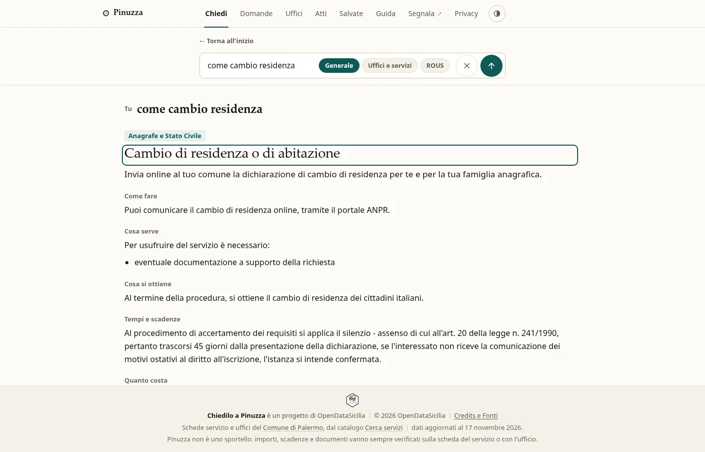
- L'etichetta (per esempio «Anagrafe e stato civile») dice il tema della risposta.
- Il titolo è il nome del servizio; sotto c'è la sintesi in una o due frasi.
- Le sezioni raccontano come fare, cosa serve, cosa si ottiene, tempi e scadenze, quanto costa, come presentare la richiesta.
- I collegamenti in fondo portano alla scheda ufficiale del servizio sul sito del Comune.
- L'avviso in rosa, quando c'è, segnala che una parte del testo è preparata dal progetto e non ancora verificata da una persona: in quel caso confermala allo sportello.
3. A chi rivolgerti
Sotto la risposta ci sono le schede degli uffici competenti. Ognuna riporta il percorso nell'organizzazione del Comune (Area › Settore › U.O.), il responsabile, la sede, il telefono, l'email e la PEC, con la data in cui la scheda è stata aggiornata.
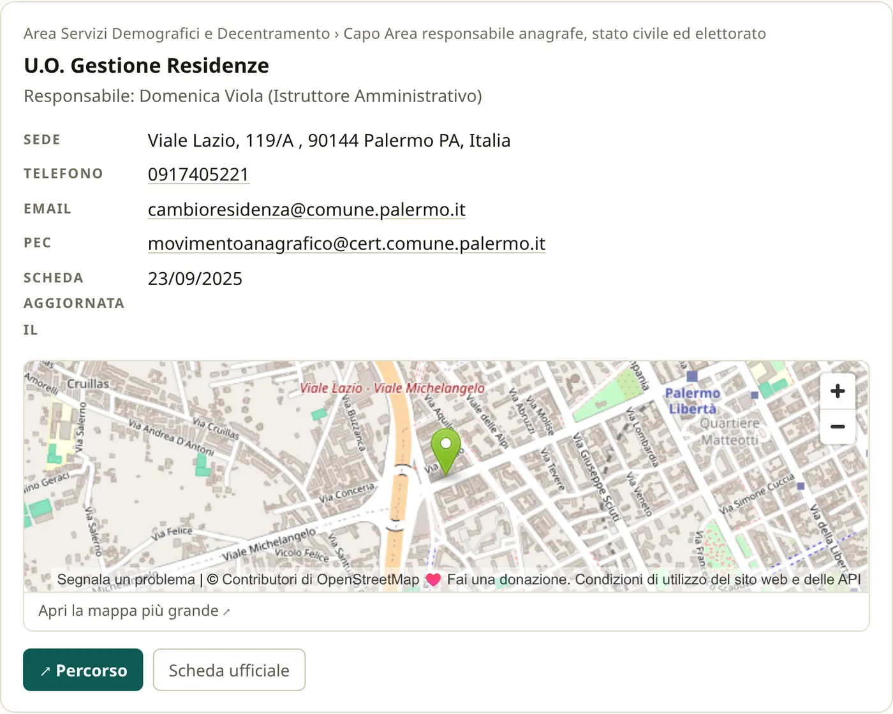
- Percorso chiede il permesso di usare la posizione e apre il navigatore con la destinazione già impostata. Se rifiuti, non succede nulla: restano indirizzo e mappa.
- Scheda ufficiale apre la pagina dell'ufficio sul sito del Comune, per controllare orari e competenze direttamente alla fonte.
- La mappa è di OpenStreetMap e si carica solo quando la scheda entra nello schermo: non pesa all'apertura.
Se un ufficio non pubblica l'indirizzo o le coordinate, la mappa lo dice e resta il link alla scheda ufficiale. Non vengono mostrati recapiti inventati: se un dato manca, compare come mancante.
4. Quando non è sicura
Può succedere che la domanda assomigli a più servizi. In quel caso Pinuzza non sceglie in silenzio: mostra un avviso rosa, «Non sono sicura di aver capito», la risposta che ritiene più probabile e, sotto, un elenco di domande vicine tra cui scegliere.
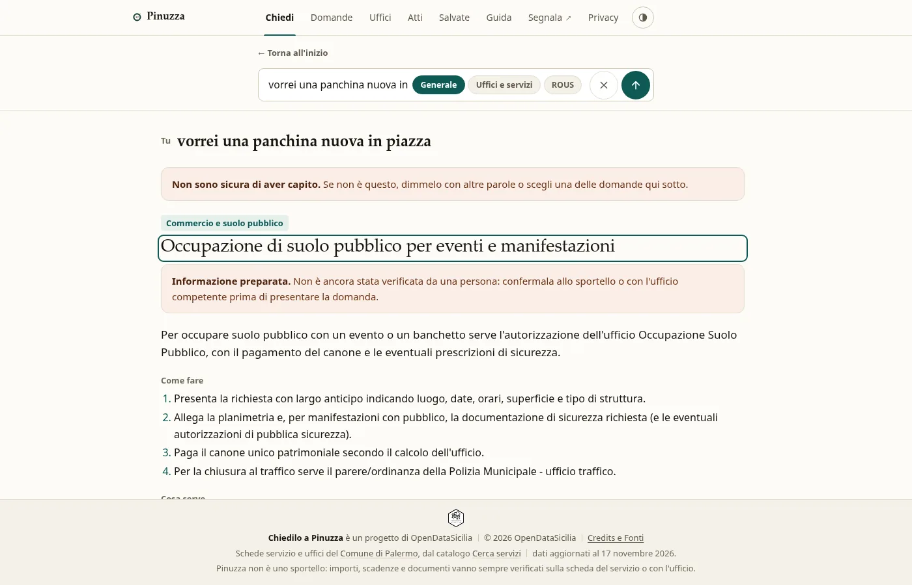
Se invece la domanda non ha proprio una risposta pronta, la scheda diventa «Non ho una risposta pronta» e Pinuzza ti indica gli uffici che potrebbero occuparsene, invitandoti a riformulare. È il comportamento voluto: meglio dire «non lo so» che inventare un requisito o un importo.
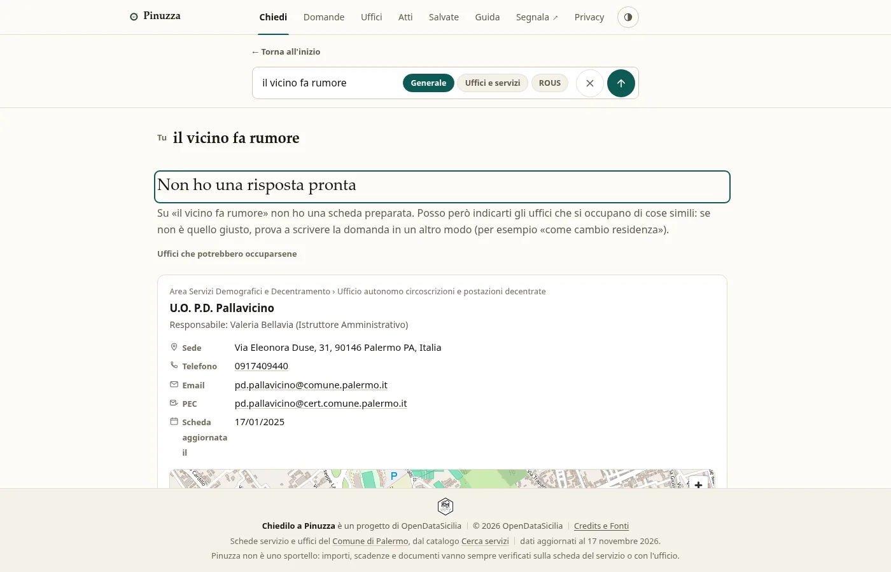
5. Salvare, ricominciare, segnalare
In fondo a ogni risposta ci sono tre gesti utili: dire se la risposta è stata utile, metterla da parte e ricominciare da capo.
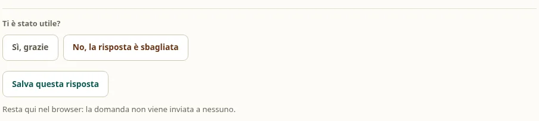
- «Salva questa risposta» la mette da parte nella memoria di questo browser. La ritrovi nella pagina Risposte salvate (voce «Salvate» nel menu in alto, «Altro» sul telefono); da lì puoi riaprirla o toglierla.
- «Sì, grazie» registra un evento aggregato solo se hai già accettato le statistiche; «No, la risposta è sbagliata» apre una segnalazione su GitHub già scritta, che leggi e correggi prima di inviare.
- «Azzera» (la × accanto alla freccia) svuota risposta e campo, toglie il
?q=dall'indirizzo e ti lascia nella pagina, pronto per una nuova domanda. «Torna all'inizio» in alto riporta invece alla home bianca.
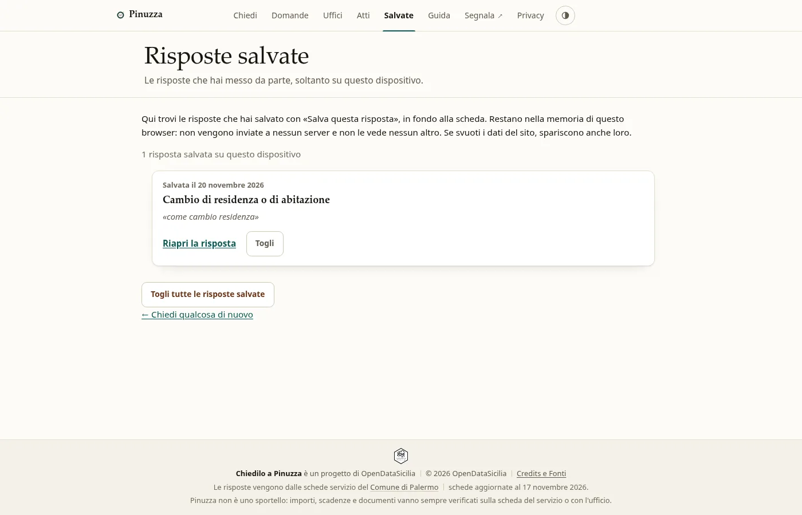
6. Tutte le domande e tutti gli uffici
Non sempre si parte da una domanda. Nella pagina Tutte le domande ci sono le 607 domande tipiche divise per categoria: sceglierne una apre direttamente la risposta. È comodo per farsi un'idea di cosa sa fare Pinuzza, o per trovare la domanda giusta quando non ci viene la parola.
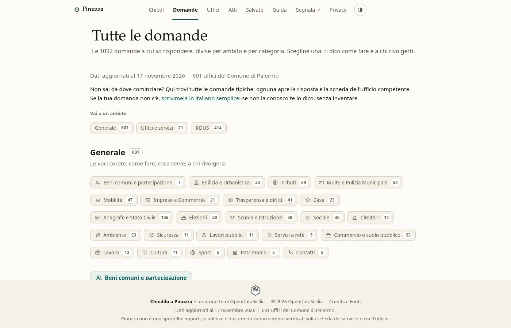
Nella pagina Tutti gli uffici ci sono invece i 601 uffici del Comune, in griglia per area o in elenco alfabetico. La ricerca parte dopo tre lettere e propone l'ufficio o l'area giusta: frecce su e giù per scegliere, Invio per aprire.
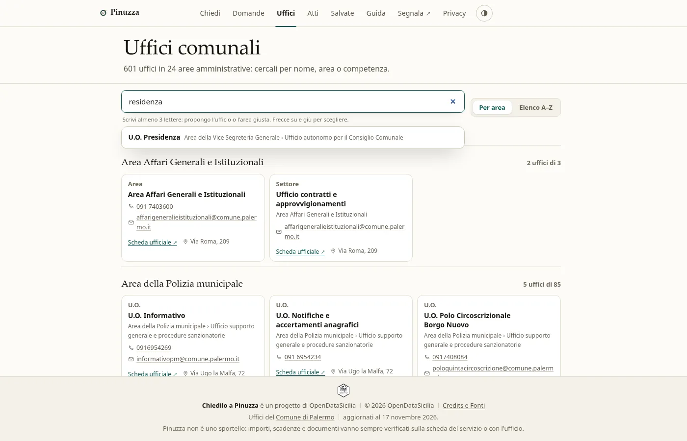
7. Sul telefono, al buio, senza rete
Sul telefono la barra del menu sta in basso e ha quattro posti: Chiedi, Domande, Uffici e «Altro». Dentro «Altro» ci sono le risposte salvate, questa guida, le segnalazioni, la privacy e il comando per cambiare aspetto. La pagina è la stessa, ridisposta in una colonna: la testata resta in alto e scorre soltanto la parte dei risultati.
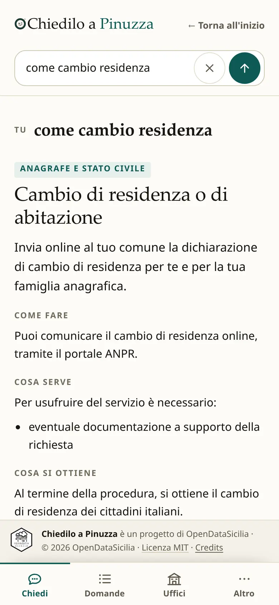
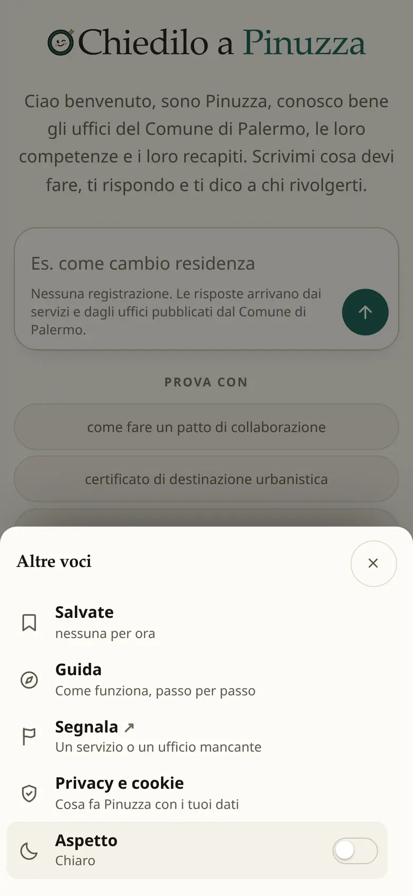
Il comando Aspetto (nel menu in alto, o in «Altro» sul telefono) passa al tema scuro e torna al chiaro: la scelta resta memorizzata in questo browser e si ritrova anche nelle altre pagine. Il tema chiaro è quello di partenza.
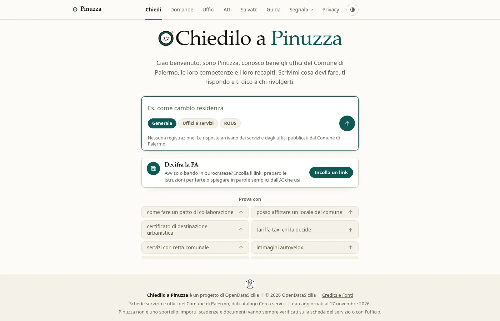
Installarla come app. Su Android, dal menu del browser scegli «Installa app» (o «Aggiungi a schermata Home»); su iPhone e iPad, in Safari, tocca Condividi e poi «Aggiungi a Home». Su computer, Chrome ed Edge mostrano l'icona di installazione nella barra degli indirizzi. L'icona sul telefono apre la stessa app, senza barra del browser.
Senza rete. Dopo la prima apertura il service worker tiene in cache le pagine, i dati e le icone: allo sportello, in metro o in un posto senza campo, domande e risposte continuano a funzionare. La prima visita però richiede la rete; le mappe e i collegamenti esterni, ovviamente, no.
8. Cosa sa di te
Non c'è registrazione, non c'è un profilo e le domande che scrivi non vengono inviate a nessun server: la ricerca avviene nel browser, sui dati scaricati. Le risposte salvate restano nella memoria locale del dispositivo e spariscono se svuoti i dati del sito.
Google Analytics entra in funzione solo se lo accetti dal banner o da «Preferenze cookie», e puoi cambiare idea quando vuoi. I dettagli sono nell'informativa privacy e cookie.
9. Cosa non è
- Non è uno sportello e non sostituisce il Comune: importi, scadenze e documenti vanno sempre verificati sulla scheda del servizio o con l'ufficio.
- Non è un modello linguistico: risponde con le voci preparate e le schede ufficiali, e quando non sa rispondere lo dice.
- Non conosce tutti i servizi del mondo: se la tua domanda riguarda un altro ente (per esempio la patente o una visita medica), ti indica gli uffici comunali più vicini ma non inventa la procedura.
- Non è aggiornata in tempo reale: i dati sono quelli pubblicati dal Comune alla data indicata nel piede di ogni pagina. Se trovi qualcosa che non torna, segnalalo su GitHub.
Domande sulla guida
Serve un account?
No. Non si registra nulla: apri la pagina e scrivi.
Le mie domande vengono registrate?
No. La domanda resta nel tuo browser e, se vuoi, nell'indirizzo della pagina. Non viene trasmessa a nessuno.
Posso usarla senza installare niente?
Sì. È un sito: si apre dal browser. L'installazione come app è solo una comodità in più, e serve la rete solo la prima volta.
Perché a volte risponde «Non ho una risposta pronta»?
Perché la domanda non è tra quelle preparate. Puoi provare a scriverla in un altro modo, scegliere una delle domande vicine o cercare l'ufficio nella pagina Tutti gli uffici.
I dati sono aggiornati?
Le schede arrivano dal catalogo dei servizi e dagli uffici del Comune di Palermo, con la data di aggiornamento in ogni scheda e nel piede del sito. Prima di andare allo sportello, una chiamata o un'occhiata alla scheda ufficiale è sempre una buona idea.
← Chiedi qualcosa a Pinuzza · Tutte le domande · Tutti gli uffici